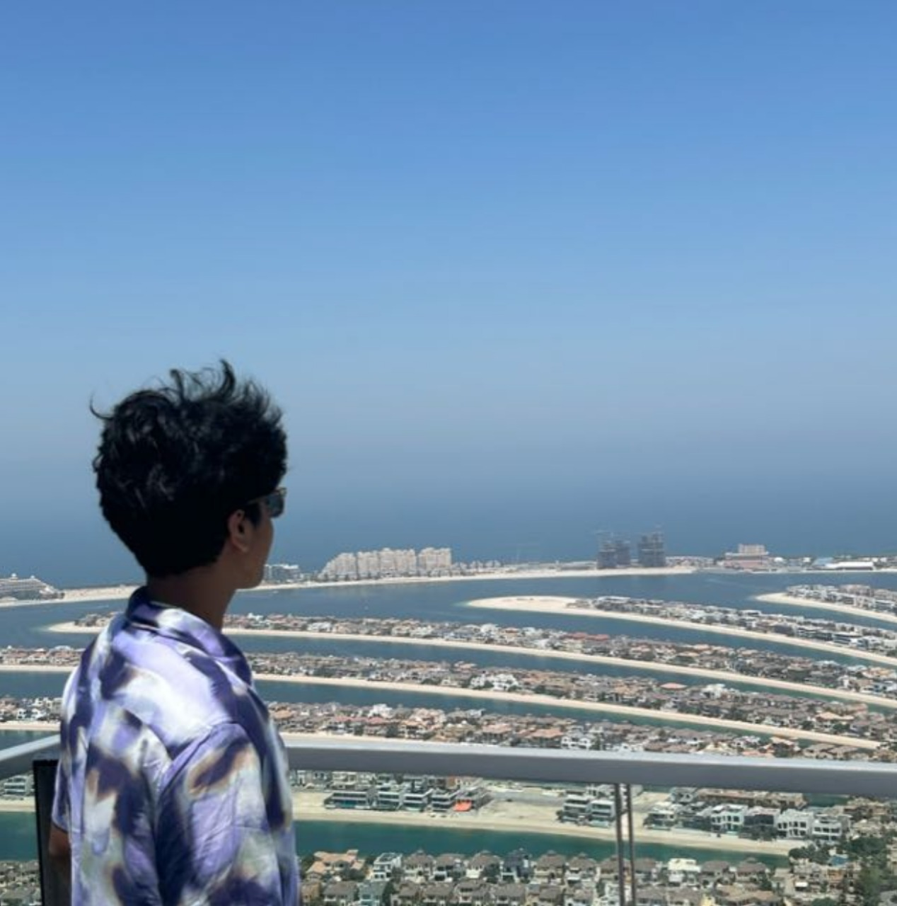

Akash Shrivas Ravishankar
hey there, i'm learning webdev
Who I am
Hey there! I'm Akash! I'm currently learning webdev as of now; I just finished learning HTML and I'm exploring the wide domains of CSS. I wish to learn JavaScript and the later programming languages required to excel in webdev in the future :)
Where I've studied
- The PSBB Millennium School, GST ROAD - Kindergarten (2010–2013)
- The PSBB Millennium School, Gerugambakkam - Grade I–III (2013–2015)
- Phoenix Greens School of Learning, Kokapet - Grade III (2015–2016)
- The PSBB Millennium School, Gerugambakkam - Grade III–VI (2016–2018)
- Podar International School, Powai - Grade VI–X (2018–2023)
- R.N. Podar School, Powai - Grade X–XII (2023–2025)
- Bachelor of Technology in Computer Science and Engineering, Manipal Institute of Technology (2025–2029)
Work Experience
National Social Scheme (NSS)
- Visited ASARE, a rehabilitation centre for patients with personality disorders. Helped and aided the patients.
- Led a team of 25 members on cleaning The Malpe Beach on 20th September, The International Coastal Clean-up Day.
Skills
- Leadership ⭐⭐⭐
- Web Development ⭐⭐
- Video Editing ⭐⭐⭐
Awards and Certifications
- U-10 Don Bosco Cricket Tournament (2014)
- NSS Beach Cleaning Volunteer (2025)
Hobbies
- After classes, I usually hit the gym and play badminton with my friends.
- I'm also into anime — you can see a list of my favourite animes HERE.